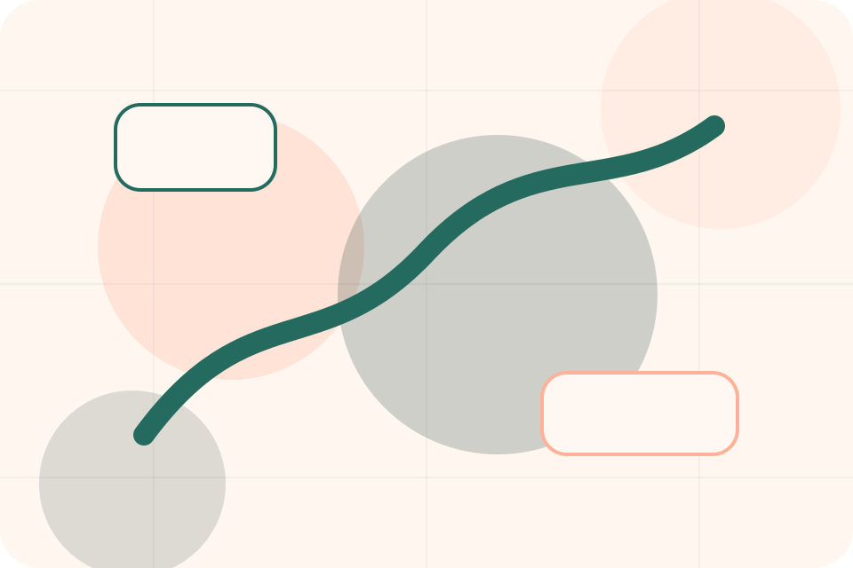
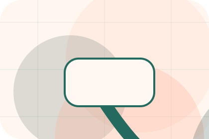
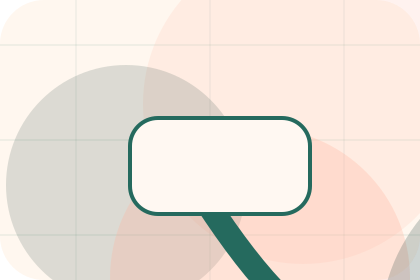
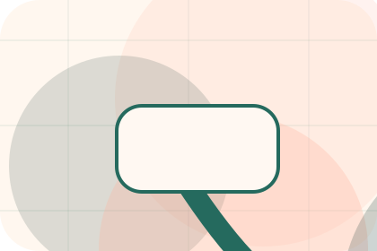
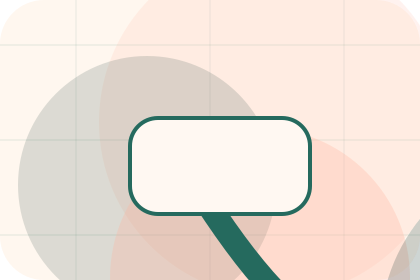
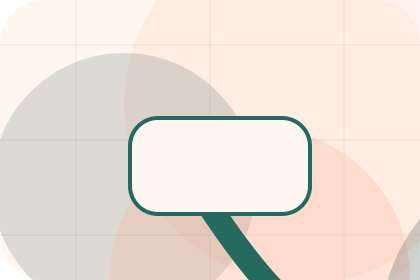
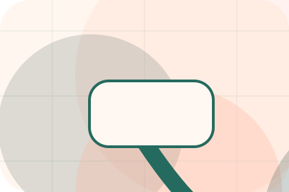
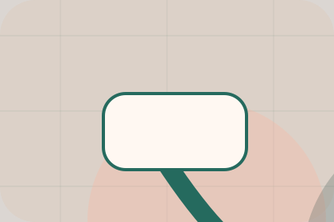

Resources / 01
Resources by Paw
Resources shaped for pets, animals & veterinary services decisions.
Resources opens as a clear pets decision hub: what Paw offers, who it helps, why it matters, and which route to take first.
The first screen combines positioning, proof, primary action, and fast internal navigation, so people can act immediately or compare the rest of the resources route with context.
Clear intakeHuman follow-upPractical reassurance
Warm appointment hero
Route the care need
Select the closest route and Paw keeps the next step, proof, and follow-up expectation aligned with care and quick triage.

Resources / 02
Guides for deeper decisions
Guides gives researching visitors a practical route into guides, checklists, and comparison material without leaving the site structure.
Each resource behaves like a useful internal link, giving cold and warm visitors a way to learn, compare, and return to the action path.
View ResourcesGuide
A useful entry point for visitors who need more context before they book a visit.
Checklist
A scannable comparison aid that makes research usable before the next decision.
Questions
A route back to support, services, or contact when the visitor is ready to act.

GuidePaw guides guide
A useful entry point for visitors who need more context before they book a visit.
Open resourcePaw guides checklist
A scannable comparison aid that makes research usable before the next decision.
Open resource
QuestionsPaw guides questions
A route back to support, services, or contact when the visitor is ready to act.
Open resourceResources / 03
Aftercare for deeper decisions
Aftercare gives researching visitors a practical route into guides, checklists, and comparison material without leaving the site structure.
Each resource behaves like a useful internal link, giving cold and warm visitors a way to learn, compare, and return to the action path.
Explore ResourcesGuide
A useful entry point for visitors who need more context before they book a visit.
Resources / 04
Prevention for deeper decisions
Prevention gives researching visitors a practical route into guides, checklists, and comparison material without leaving the site structure.
Each resource behaves like a useful internal link, giving cold and warm visitors a way to learn, compare, and return to the action path.
Explore ResourcesGuide
A useful entry point for visitors who need more context before they book a visit.

Checklist
A scannable comparison aid that makes research usable before the next decision.
Questions
A route back to support, services, or contact when the visitor is ready to act.
Resources / 05
Nutrition for deeper decisions
Nutrition gives researching visitors a practical route into guides, checklists, and comparison material without leaving the site structure.
Each resource behaves like a useful internal link, giving cold and warm visitors a way to learn, compare, and return to the action path.
Explore Resources- 01
Guide
A useful entry point for visitors who need more context before they book a visit.
- 02
Checklist
A scannable comparison aid that makes research usable before the next decision.
- 03
Questions
A route back to support, services, or contact when the visitor is ready to act.
Resources / 06
Behaviour for deeper decisions
Behaviour gives researching visitors a practical route into guides, checklists, and comparison material without leaving the site structure.
Each resource behaves like a useful internal link, giving cold and warm visitors a way to learn, compare, and return to the action path.
Explore ResourcesGuide
A useful entry point for visitors who need more context before they book a visit.
Checklist
A scannable comparison aid that makes research usable before the next decision.
Questions
A route back to support, services, or contact when the visitor is ready to act.
Resources / 07
Downloads for deeper decisions
Downloads gives researching visitors a practical route into guides, checklists, and comparison material without leaving the site structure.
Each resource behaves like a useful internal link, giving cold and warm visitors a way to learn, compare, and return to the action path.
View Resources

Guide
A useful entry point for visitors who need more context before they book a visit.
Paw downloads guide
A useful entry point for visitors who need more context before they book a visit.
Open resourcePaw downloads checklist
A scannable comparison aid that makes research usable before the next decision.
Open resource
QuestionsPaw downloads questions
A route back to support, services, or contact when the visitor is ready to act.
Open resourceResources / 08
Advice for deeper decisions
Advice gives researching visitors a practical route into guides, checklists, and comparison material without leaving the site structure.
Each resource behaves like a useful internal link, giving cold and warm visitors a way to learn, compare, and return to the action path.
Explore ResourcesGuide
A useful entry point for visitors who need more context before they book a visit.
Checklist
A scannable comparison aid that makes research usable before the next decision.
Questions
A route back to support, services, or contact when the visitor is ready to act.
Resources / 09
Learn for deeper decisions
Learn gives researching visitors a practical route into guides, checklists, and comparison material without leaving the site structure.
Each resource behaves like a useful internal link, giving cold and warm visitors a way to learn, compare, and return to the action path.
Explore Resources- 01
Guide
A useful entry point for visitors who need more context before they book a visit.
- 02
Checklist
A scannable comparison aid that makes research usable before the next decision.
- 03
Questions
A route back to support, services, or contact when the visitor is ready to act.
Resources / 10
Book Visit
Paw closes the resources route with a clear action, a quick reminder of the value, and a low-friction way to book a visit.
Visitors who are ready can use the primary action. Visitors who are still comparing can scan the section links, proof, and support routes before they book a visit.
Book VisitThe final block keeps the choice simple: act now, compare one more proof route, or send enough detail for a focused response.
Book Visitcare and quick triage
Book Visit
A veterinary site with warm urgent-care modules, appointment paths, team proof, and symptom routing. Resources ends with a direct path to book a visit, plus enough context for visitors who still need to compare.

Book VisitImportant notes before you act
Pet health content is general; urgent symptoms require direct veterinary care.